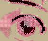

This project started with a few wallpapers I found. There were very nice, but were poorly enlarged and didn't even fit my screen. That's where this comes in. Pixel Saver will get an image enlarged to something that wasn't a multiple of 2 and fix it. It will shrink it back down to its prior state through the magic of Java.
Download this PixelSaver-v0.2.zip and save it somewhere.
You will need to verify your account.
Note: you will need a somewhat-recent edition of Java. Found HERE
To use it, just start the program and drop images in. You can select multiple at a time.
Example:
Before
After

Nice, uniform pixels :D
PS: This has not been tested much. please send bugs to ven @ tfwno.gf